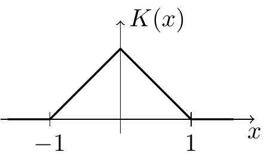
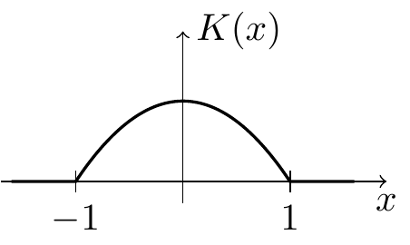
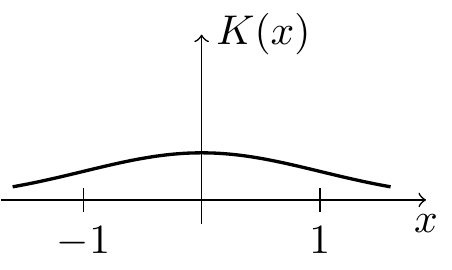
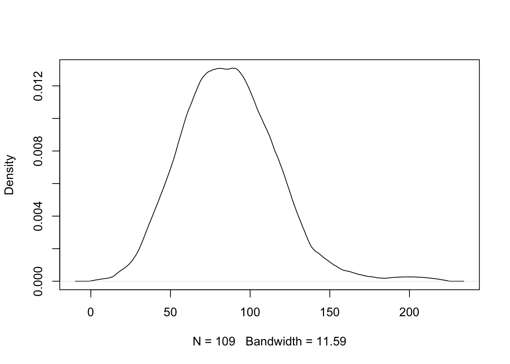

Section 4 Kernel Density Estimation in Practice
In this section we conclude our discussion of kernel density estimation by considering different aspects which are important when using the method in practice.
4.1 Integrated Error
From equation (3.6) we know \[\begin{equation*} \mathop{\mathrm{MSE}}\nolimits\bigl( \hat f_h(x) \bigr) \approx \frac{1}{nh} f(x) R(K) + \frac14 \mu_2(K)^2 f''(x)^2 h^4. \end{equation*}\] This gives the mean squared error when trying to estimate the density \(f(x)\) at a fixed point \(x\). Usually we are interested in estimating the function \(f\) rather than individual points \(f(x)\). In this case, we consider the integrated mean squared error (IMSE): \[\begin{equation*} \mathrm{IMSE}\bigl( \hat f_h \bigr) := \int_{-\infty}^\infty \mathop{\mathrm{MSE}}\nolimits\bigl( \hat f_h(x) \bigr) \,dx. \end{equation*}\] Using our result from above we find \[\begin{align*} \mathrm{IMSE}\bigl( \hat f_h \bigr) &\approx \int \Bigl( \frac{1}{nh} f(x) R(K) + \frac14 \mu_2(K)^2 f''(x)^2 h^4 \Bigr) \,dx \\ &= \frac{1}{nh} R(K) \int f(x) \,dx + \frac{h^4}{4} \mu_2(K)^2 \int f''(x)^2 \,dx \\ &= \frac{1}{nh} R(K) + \frac{1}{4} \mu_2(K)^2 R(f'') h^4, \end{align*}\] where we (mis-)use the definition of roughness as an abbreviation to express the integral over \(f''\).
As before, we can use differentiation to find the optimal value of \(h\). Here we get \[\begin{equation*} h_\mathrm{opt} = \Bigl( \frac{R(K)}{n \mu_2(K)^2 R(f'')} \Bigr)^{1/5}. \end{equation*}\] and the corresponding error is \[\begin{equation} \mathrm{IMSE}_\mathrm{opt} = \frac54 \; \frac{1}{n^{4/5}} \; \Bigl( R(K)^2 \mu_2(K) \Bigr)^{2/5} \; R(f'')^{1/5}. \tag{4.1} \end{equation}\] Thus, in order to minimise the error we still need to choose \(h \propto n^{-1/5}\) and we should choose a kernel \(K\) which minimises the value \(R(K)^2 \mu_2(K)\).
4.2 Choice of Kernel
The integrated error in equation (4.1) is proportional to \(\bigl( R(K)^2 \mu_2(K) \bigr)^{2/5}\), and none of the remaining terms in the equation depends on the choice of the kernel. Thus, we can minimise the error by choosing a kernel which has minimal \(R(K)^2 \mu_2(K)\). For a given kernel, it is easy to work out the value of \(R(K)^2 \mu_2(K)\).
Example 4.1 For the uniform kernel we have \[\begin{equation*} K(x) = \begin{cases} 1/2 & \mbox{if $-1 \leq x \leq 1$} \\ 0 & \mbox{otherwise.} \end{cases} \end{equation*}\] From this we find \[\begin{equation*} R(K) = \int_{-\infty}^\infty K(x)^2 \,dx = \int_{-1}^1 \frac14 \,dx = \frac12 \end{equation*}\] and \[\begin{equation*} \mu_2(K) = \int_{-\infty}^\infty x^2 K(x) \,dx = \int_{-1}^1 \frac12 x^2 \,dx = \frac16 \Bigl. x^3 \Bigr|_{x=-1}^1 = \frac16 \bigl( 1 - (-1) \bigr) = \frac13. \end{equation*}\] Thus, for the triangular kernel we have \[\begin{equation*} R(K)^2 \mu_2(K) = \Bigl( \frac12 \Bigr)^2 \frac13 = \frac{1}{12} \approx 0.083333. \end{equation*}\]
Calculations similar to the ones in the example give the following values:
| kernel | \(\mu_2(K)\) | \(R(K)\) | \(R(K)^2 \mu_2(K)\) | |
|---|---|---|---|---|
| Uniform |  |
\(\displaystyle\frac13\) | \(\displaystyle\frac12\) | \(0.08333\) |
| Triangular |  | \(\displaystyle\frac16\) | \(\displaystyle\frac23\) | \(0.07407\) |
| Epanechnikov |  | \(\displaystyle\frac15\) | \(\displaystyle\frac35\) | \(0.07200\) |
| Gaussian |  | \(1\) | \(\displaystyle\frac{1}{2\sqrt{\pi}}\) | \(0.07958\) |
The best value in the table is obtained for the Epanechnikov kernel, with \(R(K)^2 \mu_2(K) = 9/125 = 0.072\). One can show that this value is indeed optimal amongst all kernels. Since the difference in error for the kernels listed abive is only a few percent, any of these kernels would be a reasonable choice.
4.3 Bandwidth Selection
Our formulas for the optimal bandwidth contain the terms \(f(x)^2 |f''(x)|\) for fixed \(x\) and \(R(f'')\) for the integrated error. Since \(f\) is unknown, neither of these quantities are available and instead different rules of thumb are used in the literature. Here we present one possible choice of bandwidth estimator.
Suppose that \(f\) is a normal density, with mean \(\mu\) and variance \(\sigma^2\). Then we have \[\begin{equation*} f(x) = \frac{1}{\sqrt{2\pi\sigma^2}} \exp\bigl( - (x-\mu)^2 / 2\sigma^2 \bigr). \end{equation*}\] Taking derivatives we get \[\begin{equation*} f'(x) = - \frac{1}{\sqrt{2\pi\sigma^2}} \frac{x-\mu}{\sigma^2} \exp\bigl( - (x-\mu)^2 / 2\sigma^2 \bigr) \end{equation*}\] and \[\begin{equation*} f''(x) = \frac{1}{\sqrt{2\pi\sigma^2}} \Bigl( \frac{(x-\mu)^2}{\sigma^4} - \frac{1}{\sigma^2} \Bigr) \exp\bigl( - (x-\mu)^2 / 2\sigma^2 \bigr) \end{equation*}\] Patiently integrating the square of this function gives \[\begin{align*} R(f'') = \int_{-\infty}^\infty f''(x)^2 \,dx = \cdots = \frac{3}{8\sigma^5\sqrt{\pi}}. \end{align*}\] This can be used as a simple “plug-in rule” with \(\sigma\) estimated by the sample standard deviation.
We now demonstrate how this rule of thumb could be used in R to obtain a kernel density estimate for the snowfall data. We will use the Epanechnikov kernel. For compatibility with the kernels built into R, we rescale this kernel, so that \(\mu_2(K) = 1\), i.e. we consider \(K_{\sqrt{5}}\) in place of \(K\). An easy calculation shows that the roughness is then \(R(K) = 3 / (5*\sqrt(5))\).
# downloaded from https://teaching.seehuhn.de/data/buffalo/
x <- read.csv("data/buffalo.csv")
snowfall <- x$snowfall
n <- length(snowfall)
# Roughness of the Epanechnikov kernel, after rescaling with h = sqrt(5)
# so that the second moment becomes mu_2 = 1:
R.K <- 3 / (5 * sqrt(5))
# Rule of thumb:
R.fpp <- 3 / (8 * sd(snowfall)^5 * sqrt(pi))
# formula for the optimal h
my.bw <- (R.K / (n * 1^2 * R.fpp))^0.2
my.bw## [1] 11.58548R has a variety of different builtin methods to estimate bandwidths. See stats/bandwidth for a description. For comparison to our result, we list here the bandwidths suggested by some of R’s algorithms:
data.frame(
name = c("nrd0", "nrd", "SJ"),
bw = c(bw.nrd0(snowfall), bw.nrd(snowfall), bw.SJ(snowfall)))## name bw
## 1 nrd0 9.724206
## 2 nrd 11.452953
## 3 SJ 11.903840All of these value seem close the value we obtained manually. Using our bandwidth estimate, we get the following estimated density.
plot(density(snowfall, bw = my.bw, kernel = "epanechnikov"),
main = NA)
In practice one would just use one of the built-in methods, for example using
bw="SJ" instead of estimating the bandwidth manually.
4.4 Higher Dimensions
So far we have only considered the one-dimensional case, where the samples \(x_i\) are real numbers. In this subsection we will sketch how these methods will need to be adjusted for the multivariate case of \(x_i = (x_{i,1}, \ldots, x_{i,p}) \in \mathbb{R}^p\).
In this setup, a kernel is a function \(K\colon \mathbb{R}^p\to \mathbb{R}\) such that
- \(\int \cdots \int K(x) \,dx_p \cdots dx_1 = 1\),
- \(K(x) = K(-x)\) and
- \(K(x) \geq 0\) for all \(x\in \mathbb{R}\),
where the integral in the first condition is now over all \(p\) coordinates.
Example 4.2 If \(K_1, \ldots, K_p\) are one-dimensional kernels, then the product \[\begin{equation*} K(x_1, \ldots, x_p) := K_1(x_1) \cdots K_p(x_p) \end{equation*}\] is a kernel in \(p\) dimensions. If we use the product of \(p\) Gaussian kernels, we get \[\begin{align*} K(x) &= \prod_{i=1}^p \frac{1}{\sqrt{2\pi}} \exp\bigl(-x_i^2/2\bigr) \\ &= \frac{1}{(2\pi)^{p/2}} \exp\Bigl(-\frac12 (x_1^2 + \cdots + x_p^2) \Bigr). \end{align*}\]
There are different possibilities for rescaling these kernels:
If all coordinates live on “comparable scales” (e.g., if they are measured in the same units), the formula \[ K_h(x) = \frac{1}{h^p} K(x/h) \] for all \(x\in\mathbb{R}^p\) can be used, where \(h>0\) is a bandwidth parameter as before. The scaling by \(1/h^p\) is required to ensure that the integral of \(K_h\) equals \(1\), so that \(K_h\) is a kernel again.
If different scaling is desirable for different components, the formula \[\begin{equation*} K_h(x) = \frac{1}{h_1 \cdots h_p} K(x_1/h_1, \ldots, x_p/h_p) \end{equation*}\] for all \(x\in\mathbb{R}^p\) can be used, where \(h = (h_1, \ldots, h_p)\) is a vector of bandwidth parameters.
A more general version would be to use a symmetric, positive definite bandwidth matrix \(H \in \mathbb{R}^{p\times p}\). In this case the required scaling is \[\begin{equation*} K_H(x) = \frac{1}{\mathrm{det}(H)} K\bigl( H^{-1} x \bigr) \end{equation*}\] for all \(x\in\mathbb{R}^p\).
For all of these choices, the kernel density estimator is given by \[\begin{equation*} \hat f_h(x) = \frac{1}{n} \sum_{i=1}^n K_h(x - x_i) \end{equation*}\] (using \(K_H\) for the third option) for all \(x\in\mathbb{R}^p\). Bandwidth selection in the multivariate case is a difficult problem and we will not discuss this here.